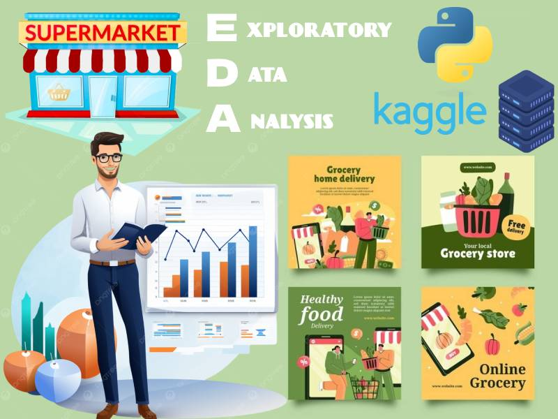
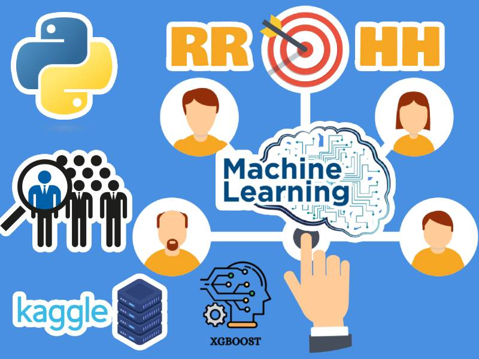

PORTAFOLIO



Hola, soy Marlon Rojas. Ingeniero de Sistemas con experiencia en el área de infraestructura, donde trabajo como soporte N2 en la resolución de incidencias con equipos informáticos, optimización de sistemas y redes. Actualmente, estoy en un proceso de preparación para dar el salto hacia el análisis de datos, para ello estoy desarrollando habilidades en diversas herramientas y técnicas de análisis. También estoy aprendiendo sobre procesos y mejora continua, con la meta de implementar soluciones eficientes de gran impacto. Mi compromiso es seguir mejorando mis habilidades para aportar valor a través de enfoques innovadores en tecnología y gestión.
Actualmente estoy cursando un Diplomado en Procesos y Mejora Continua, donde estoy aprendiendo sobre gestión de procesos, modelamiento de procesos con Bizagi, Lean Six Sigma: Yellow Belt, gestión de KPI's y OKR's, y robotización de procesos con UiPath.
Diplomado en Inteligencia y Análisis de Datos, dividido en cinco módulos clave: Data Analytics, SQL Server for Analytics, Power BI, Python para análisis de datos y Data Science: Machine Learning. Ver Certificado
Curso para diseñar y estructurar bases de datos relacionales de forma eficiente, aplicando buenas prácticas de modelado. Ver Certificado
Ingeniero de Sistemas (2022), egresado de la Universidad Autónoma del Perú (2014-2019). Destacado con el segundo puesto en los ciclos VI y VII (2017). Ver Certificado
Desarrollo proyectos de análisis de datos como parte de mi formación continua, aplicando Power BI, SQL y Python en datasets públicos (Kaggle), trabajando en la creación de dashboards interactivos, limpieza, transformación de datos con pandas y análisis exploratorio para extraer insights, presentados a través de visualizaciones dinámicas
Brindo soporte técnico en equipos y redes, gestiono plataformas de tickets y colaboro en implementaciones tecnológicas. Participé en proyectos clave como la migración a Google Workspace y la unificación de sistemas entre NATURA y AVON, asegurando una transición eficiente y soporte continuo.
Brindé soporte técnico remoto a tiendas y usuarios administrativos del Grupo EFE, resolviendo incidencias en sistemas de ventas y equipos. Coordiné con equipos internos para mejoras y brindé capacitaciones básicas sobre el uso del sistema. Ver Certificado
Estuve a cargo de todo el área de sistemas, gestionando y atendiendo tickets de soporte técnico a usuarios internos y clientes externos. Supervisé a un equipo de dos técnicos, coordiné la preparación, envío de equipos a nivel nacional. Documenté incidencias y procedimientos técnicos para optimizar la atención y el mantenimiento. Ver Certificado